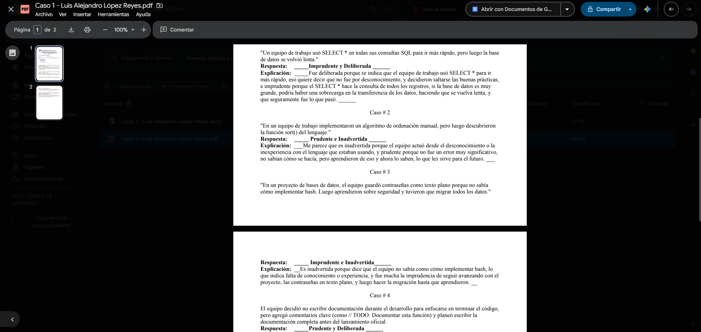

Semana 1
18 de mayo de 2026
Fecha y hora
18-05-2026 (5:00pm a 8:30pm – Virtual)
Actividades realizadas durante la clase:
- Explicación de las presentaciones por parte del profesor.
- Caso 1: se abrió la semana 1, se revisaba y entregaba en la clase de la semana 2.
Soluciones implementadas
Clasificación de los cuadrantes de la deuda técnica según el contexto que se presentaba en el caso 1.
Evidencias (capturas, código, diagramas)
Captura 1: Caso 1 que quedó pendiente para hacer de forma sincrónica.

Reflexiones o mejoras futuras
Tener claros los cuadrantes de la deuda técnica, no son difíciles pero se pueden confundir en la tabla.
Notas generales
Se explica el programa del curso, el cronograma de actividades, se explica cómo funcionará el curso con los proyectos por realizar.
Conceptos Básicos:
- Ingeniería de Software: Aplicación de un enfoque sistemático, disciplinado y cuantificable al desarrollo, operación y mantenimiento del software.
- Software vs. Hardware: El software agrupa las instrucciones, programas y datos. El hardware abarca los componentes físicos necesarios para operar.
- Programa y Algoritmo: Un programa es un subconjunto del software que actúa como un engranaje funcional. Un algoritmo es el conjunto de instrucciones precisas y finitas que dan dicha funcionalidad.
Importancia de la Ingeniería de Software:
- Previene colapsos y fallas en sistemas críticos (salud, banca, transporte).
- Evita el fracaso de proyectos por mala planificación, reduciendo pérdidas de tiempo y dinero.
- Garantiza que los sistemas sean escalables, mantenibles y seguros mediante buenas prácticas.
La Deuda Técnica:
Costo adicional (retrabajo) que se genera por elegir una solución rápida en lugar de la más efectiva y adecuada. Se divide en cuatro cuadrantes:
- Prudente y deliberada: Se asume el riesgo de una entrega rápida porque los beneficios lo superan.
- Imprudente y deliberada: Se prioriza la rapidez a pesar de saber cómo producir el código correcto.
- Prudente e inadvertida: Se descubre una solución superior posterior a la implementación inicial.
- Imprudente e inadvertida: El equipo intenta hacer el mejor código sin contar con el conocimiento técnico necesario.
Historia y Crisis del Software:
- Crisis de los años 60: El avance del hardware superó ampliamente al software, resultando en proyectos no completados, costos disparados y sistemas poco confiables.
- Como respuesta a esta crisis, surgió la necesidad estricta de aplicar métodos predecibles, repetibles, controles de calidad y estándares.
Código de Ética:
- Establece principios fundamentales exigiendo actuar siempre en beneficio de la sociedad y el cliente.
- Obliga a garantizar productos de software de alta calidad y seguros, evitando conflictos de interés o prácticas negligentes.